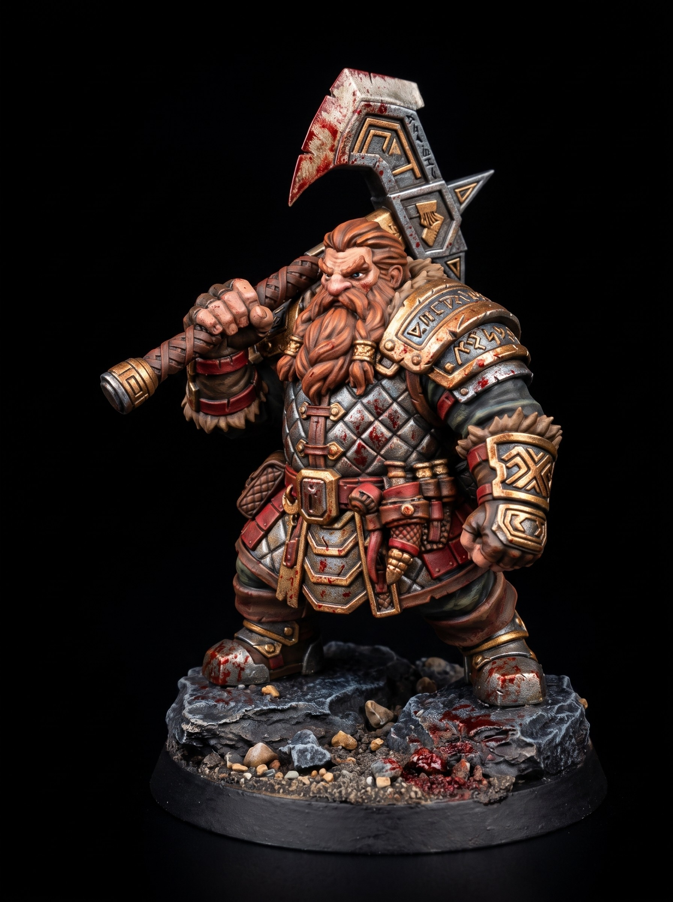

Undead Crypt Behemoth Tabletop Monster STL
September 07, 2026

The stone altar shatters into dust. Black marrow seeps between the broken flagstones. Six segmented limbs drag a massive torso into the green light. A Crypt Behemoth hauls itself out of the abyss.
Piles of fused bone form its hunched carapace. Rusted iron plating bolts directly into the creature's spine. Four hollow eye sockets burn with pale frost. Its primary grip crushes a pitted tombstone wrapped in heavy executioner chains.
The executioner lowers his greatsword and takes a step back. The Wraith Lord raises its scythe toward the vault entrance. The behemoth exhales a cloud of frozen grave dust that coats the floor in rime. The sound rattles the teeth in Varek's skull.
The beast ignores the undead lords. It locks all four burning eyes on Varek. Its chest plate splits open to reveal a ribcage lined with reaching human hands.
Get free miniatures:
- Fantasy: https://cults3d.com/@BattleFoundry
- Scifi: https://cults3d.com/@BATTLEFOUNDRYSCIFI
- Grimdark: https://cults3d.com/@DREADWORKS
- Resin Statue: https://cults3d.com/@BlacksiteSyndicate